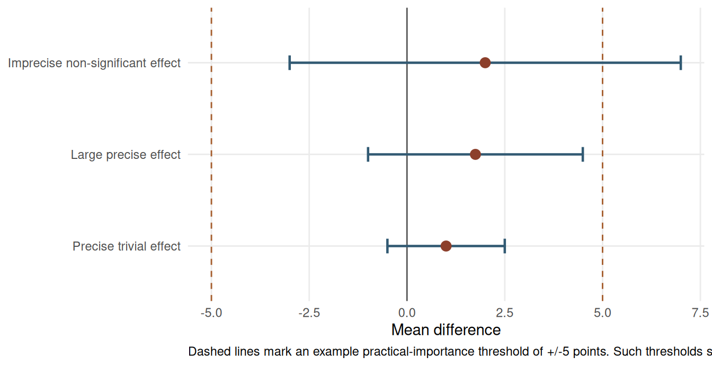

Chapter 15: Effect Sizes and Confidence Intervals over P-Values
Learning Objectives
By the end of this chapter, you will be able to explain why p-values alone are insufficient for small-sample inference, compute and interpret common effect-size measures, use confidence intervals to judge magnitude and precision, and report results in language that separates statistical evidence from practical importance.
Why P-Values Are Not Enough
A p-value answers a narrow question: how unusual the data would be if the null hypothesis and modelling assumptions were true. It does not tell the reader whether an effect is large, precise, clinically important, educationally meaningful, or worth acting on. In small studies, this limitation is especially visible because even practically important effects can have p-values above 0.05 when the confidence interval is wide.
Effect sizes and confidence intervals restore the missing information. The effect size describes magnitude, while the interval describes the range of values that remain compatible with the data. A transparent report should therefore make the p-value secondary to the estimate, its uncertainty, and its practical interpretation.
Common Effect-Size Metrics
Cohen’s d expresses a mean difference in pooled standard-deviation units. Odds ratios compare the odds of a binary outcome between groups. Correlations such as Pearson’s r, Spearman’s rho, and Kendall’s tau describe association. Variance-accounted-for measures such as eta-squared and epsilon-squared are useful for omnibus comparisons. These metrics are not interchangeable; the correct choice depends on the outcome scale, design, and question.
For ANOVA-style summaries, eta-squared is often biased upward in small samples because it attributes sample-specific noise to the effect. Epsilon-squared and omega-squared are usually more cautious alternatives. For a Kruskal–Wallis test, a common epsilon-squared estimate is \(\epsilon^2 = (H - k + 1)/(n - k)\), where \(H\) is the test statistic, \(k\) is the number of groups, and \(n\) is the total sample size (Tomczak and Tomczak 2014).
Cohen’s conventional benchmarks of d = 0.20, 0.50, and 0.80 are useful only as a starting vocabulary (Cohen 1988). Practical importance is domain-specific. In education, effects as small as d = 0.10 can be meaningful when scaled to large populations (Kraft 2020); in clinical trials, even d = 0.50 may be insufficient if the intervention carries substantial risk, cost, or burden.
Table 15.1
Context-specific effect-size benchmarks
| Domain | Small benchmark | Moderate benchmark | Large benchmark | Source |
|---|---|---|---|---|
| Psychological interventions | d = 0.20 | d = 0.50 | d = 0.80 | Cohen; Lipsey and Wilson |
| Educational interventions | d = 0.05-0.10 | d = 0.20-0.30 | d >= 0.50 | Kraft |
| Medical treatments | OR = 1.20 | OR = 2.00 | OR >= 4.00 | Chen and colleagues |
| Customer satisfaction | d = 0.20 | d = 0.50 | d = 0.80 | Domain standard |
| Process improvements | 5% change | 10-20% change | >=25% change | Domain standard |
Note. The values are interpretive anchors, not universal cut-offs. Use domain evidence and substantive consequences when judging magnitude.
Educational effects are often smaller than laboratory effects but can still matter when an intervention reaches many students (Kraft 2020). Medical odds ratios require clinical context because the same odds ratio can imply very different absolute risk changes depending on baseline risk (Chen, Cohen, and Chen 2010). Meta-analytic norms, such as those reviewed by Lipsey and Wilson (1993), are useful because they place a new estimate within an empirical distribution of related studies.
Mean Differences and Standardised Effects
The most interpretable effect size is often the unstandardised mean difference. In the teaching-method example below, Method A has a higher average score than Method B. The difference in original score units is the first result to report; Cohen’s d and Hedges’ g help compare the result with other studies that used different scales.
Table 15.2
Mean-difference and standardised effect-size summary
| Quantity | Estimate | 95% CI | Interpretation |
|---|---|---|---|
| Method A mean | 81.5 | -- | Average score under Method A |
| Method B mean | 79.8 | -- | Average score under Method B |
| Mean difference (A - B) | 1.8 | -1.0 to 4.5 | Difference in original test-score units |
| Cohen's d | 0.54 | -0.32 to 1.40 | Standardised difference using the pooled SD |
| Hedges' g | 0.52 | -0.31 to 1.35 | Small-sample correction to Cohen's d |
Note. Two independent groups with n = 12 per group. Equal-variance t test: t(22) = 1.32, p = 0.200.
Students in Method A scored about 1.8 points higher than those in Method B, with a 95% CI from -1.0 to 4.5 points. On the standardised scale, Cohen’s d is about 0.54 and Hedges’ g is about 0.52. The reporting lesson is to give the reader both the original-unit difference and the standardised comparison, while recognising that the standardised interval remains wide with only 12 observations per group.
Binary Effects: Odds Ratios, Risk Differences, and NNT
For binary outcomes, odds ratios are common but can be difficult to interpret. Odds ratios compare odds, not risks. When baseline risk is low, roughly below 10%, the odds ratio approximates the risk ratio; when baseline risk is higher, the odds ratio can substantially overstate the apparent effect. Risk differences are often more directly useful because they describe the absolute change in event probability. The number needed to treat (NNT) is the reciprocal of the absolute risk difference and answers how many people would need the intervention for one additional success relative to control.
Table 15.3
Binary effect-size summaries for a small trial
| Quantity | Estimate | 95% CI | Interpretation |
|---|---|---|---|
| Treatment success rate | 0.75 | -- | 15 successes among 20 treated participants |
| Control success rate | 0.50 | -- | 10 successes among 20 control participants |
| Absolute risk difference | 0.25 | -0.04 to 0.54 | Additional success probability under treatment |
| Odds ratio | 2.92 | 0.66 to 14.50 | Odds of success in treatment relative to control |
| Number needed to treat | 4.0 | Not bounded because the risk-difference CI crosses 0 | Approximate patients treated for one additional success |
Note. Fisher's exact test for the 2 x 2 table gives two-sided p = 0.191. The odds-ratio CI is exact; the odds ratio is the conditional maximum-likelihood estimate from Fisher's exact test and can differ slightly from the simple cross-product ratio. The risk-difference CI is an uncorrected large-sample interval used here for interpretation.
The treatment group has a higher observed success rate, but the confidence interval for the risk difference crosses zero and the exact odds-ratio interval is wide. Because NNT is the reciprocal of the risk difference, an interval that includes zero crosses infinity and produces an unbounded or discontinuous NNT interval. In such cases, report the risk difference and its interval as the primary inferential summary, and present the point-estimate NNT with a cautionary note rather than as a simple bounded interval.
Confidence Intervals as the Primary Summary
Confidence intervals are often more informative than p-values because they communicate magnitude and precision simultaneously. An interval that excludes the null value also corresponds to a statistically significant result at the matching alpha level, but its real value is broader: it shows whether the data are compatible with effects that would matter in practice.
In small-sample work, a non-significant result with a wide interval should usually be described as imprecise rather than negative. Conversely, a narrow interval that rules out practically important effects can support a more substantive conclusion even when p is above 0.05. Chapter 16 develops this distinction in detail.
Reporting Effect Sizes
A complete results sentence names the estimator, gives the point estimate, reports the confidence interval, and then interprets the magnitude in context. For the teaching-method example, a concise report would be: “Method A scores were higher than Method B scores by 1.8 points, 95% CI [-1.0, 4.5], corresponding to Hedges’ g = 0.52.” The practical interpretation should then explain whether a 1.8-point gain is educationally meaningful, not merely whether the p-value crossed a threshold.
TipResults Sentence Builder
Use this structure when writing small-sample results:
Estimator: Name the comparison or association in original units.
Magnitude: Report the point estimate and a suitable effect size.
Uncertainty: Report the confidence interval before the p-value if both are included.
Context: State the practical threshold, benchmark, or prior evidence used to judge importance.
Caution: If the interval is wide, say that the estimate is imprecise rather than over-interpreting the point estimate.
Example: “The intervention group scored 4.2 points higher than the comparison group, 95% CI [0.8, 7.6], Hedges’ g = 0.62. The interval includes values from a small educational benefit to a larger practically meaningful gain, so the estimate should be treated as promising but still imprecise.”
When adapting the code examples, record the random seed for any simulation or bootstrap step and include package versions in reproducible reports. Stochastic procedures can otherwise produce slightly different intervals across machines.
Key Takeaways
P-values alone are too thin for small-sample interpretation. Effect sizes describe how large a result is, confidence intervals describe how precisely it has been estimated, and original-unit summaries often communicate practical importance better than standardised metrics. A strong report gives the estimate, its uncertainty, and the substantive benchmark used to judge whether the effect matters.
Self-Assessment Quiz
Question 1. Cohen’s d = 0.50 means:
Explanation.
Cohen’s d is a standardised mean difference. A value of 0.50 means the two group means differ by one half of the pooled standard deviation.
Question 2. Why should effect sizes be reported alongside p-values?
Explanation.
A p-value does not tell the reader how large an effect is. The effect size supplies the magnitude, and the confidence interval supplies the uncertainty around that magnitude.
Question 3. An odds ratio of 3.0 means:
Explanation.
Odds ratios compare odds, not risks. When outcomes are common, an odds ratio can differ meaningfully from the corresponding risk ratio.
Question 4. A confidence interval for a mean difference is -2 to 8 points. What is the best interpretation?
Explanation.
The interval includes zero but also includes positive values that may be practically important. That pattern indicates imprecision, not proof of no effect.
Question 5. Why can an NNT confidence interval be difficult to report when the risk-difference interval crosses zero?
Explanation.
NNT is the reciprocal of the risk difference. If the risk-difference interval includes zero, the reciprocal crosses infinity, so a simple bounded NNT interval is misleading.
Question 6. Which statement about generic benchmarks such as d = 0.20, 0.50, and 0.80 is best?
Explanation.
Generic benchmarks are useful shorthand, but practical importance depends on the outcome, cost, risk, and prior evidence in the field.